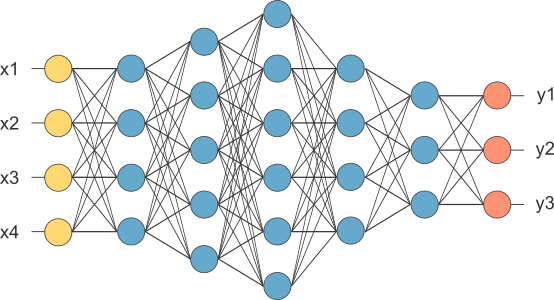

About Virtual Assistant
Virtual Voice Assistant is a program that performs duties or services for an individual based on voice commands or questions. Virtual assistant is an advanced equipment for everyone in this new era of 21st century. It has presented a new technology where we can ask questions and can interact with machines as we do with other people. This virtual assistant is developed by using Speech Recognition technology combined with Machine Learning and Computer Vision to perform different services on voice commands.
Speech Recognition
Speech recognition is a field of computer science that develops technologies that can recognize spoken words and phrases and convert them into text by computers. The program can be used to implement virtual assistants.
Services performed by Virtual Assistant
Implementation
Each module has been implemented separately and their trained models are saved. These models are used in the development of virtual assistant which executes these models at different time depending on requirements. Face Recognition model is utilized to detect user, image classification with neural network is used to identify any image, deep neural network to reconize traffic sign is used to predict traffic sign in images and videos etc.
Recordings
1. User Identification - LOGIN
As soon as program starts, Virtual Assistant will verify if the user is authorized to use the services or not. Program will perform Face Recognition - Computer Vision algorithm via webcam to identify the user. Face Recognition full project is available in Github.
- Unauthorized Access
-
Program will perform face recognition and declare the access to be unauthorized if it is less than 90 % confident about the user.
Voice Assistant:
- Authorized Access
-
Authorized access means program is more than 90 % confident about the user. User is now allowed to access all the services of virtual assistant on voice commands.
Voice Assistant:
2. What can I do?
Virtual Machine knows her name, work and what is it doing.
Voice Assistant:
3. Create, Open, Delete, Rename Folders and Change Directory
Virtual Assistant can create new folders in requested directory, open folders, rename any existing folder and delete requested folders on voice commands.
Voice Assistant:
4. Make and save important notes
Virtual Assistant can make note of important events or lectures or friend's birthday.
Voice Assistant:
5. Access to LinkedIn, Github, Youtube and Google Search
Virtual Assistant can perform google search on
Voice Assistant:
6. Opening and Recognizing image - Deep Learning
Virtual Assistant can open requested image as well as recognize the image with confidence. Program will perform Image Recognition - Computer Vision algorithm to identify the image. Image Recognition using Convolutional Neural Network full project is available in Github.
Voice Assistant:
Working on modules below to add in virtual assistant :
- Traffic sign recognition.
- Number plate recognition.
- Real estate price prediction.
- Object detection and recognition.
- Advance Lane detection in images and videos.